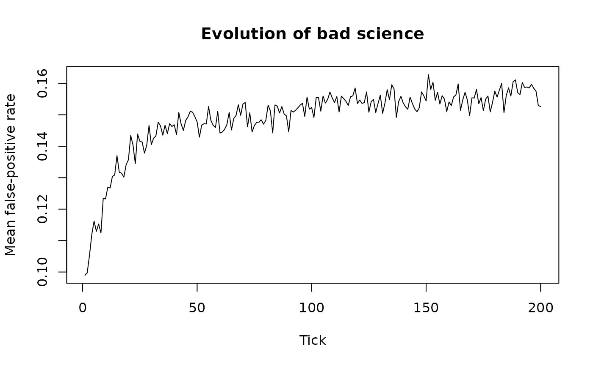

Implements the agent-based model from Smaldino & McElreath (2016).
"Labs" (agent groups) have heritable research_power (W; the probability
of detecting a real effect when the hypothesis under test is true) and
research_effort (e; methodological rigour, which lowers the per-test
false-positive rate). Each tick, a lab tests n_studies_per_tick
hypotheses, each of which is a priori true with probability
base_rate_true (b). Pub counts are
Usage
run_bad_science(
n_labs = 200L,
n_ticks = 500L,
n_studies_per_tick = 5L,
replication_rate = 0,
replication_penalty = 5,
alpha_base = 0.5,
base_rate_true = 0.3,
research_power_init_mean = 0.3,
research_effort_init_mean = 0.8,
mutation_sd = 0.05,
seed = NULL
)Arguments
- n_labs
Integer; number of labs. Default 200.
- n_ticks
Integer; number of evolutionary ticks to run. Default 500.
- n_studies_per_tick
Integer; studies produced per lab per tick. Default 5.
- replication_rate
Numeric in [0, 1]; probability per tick that a lab attempts to replicate one of a random neighbour's published findings. A failed replication (original was a false positive) debits the original lab's publication count by
replication_penalty. Default 0.- replication_penalty
Numeric \(\geq 0\); publication credits subtracted from the original lab when a replication attempt fails. Set to 0 to recover the "replication without cost" behaviour. Default 5.
- alpha_base
Numeric in (0, 1]; per-test false-positive rate at zero effort. FPR at effort
eisalpha_base * (1 - e). Default 0.5, matching Smaldino & McElreath's \(\alpha_0\).- base_rate_true
Numeric in (0, 1); prior probability that a tested hypothesis is genuinely true. Default 0.3. Higher values mean a larger share of publications are true positives, which sharpens replication's ability to discriminate low-effort labs; very low values (< 0.15) swamp replication's signal because almost every publication is a false positive regardless of effort.
- research_power_init_mean
Numeric; initial mean research power W. Default 0.3.
- research_effort_init_mean
Numeric; initial mean research effort e. Default 0.8.
- mutation_sd
Numeric; standard deviation of Gaussian mutation applied to both traits at reproduction. Default 0.05.
- seed
Integer or
NULL; random seed for reproducibility. DefaultNULL.
Value
A data frame with one row per tick and columns:
tTick number.
mean_powerMean
research_poweracross labs.mean_effortMean
research_effortacross labs.mean_fprMean false-positive rate
alphaacross labs.total_publicationsTotal publications produced this tick.
failed_replicationsNumber of failed replication attempts.
Details
true positives ~ Binomial(n_studies * b, W) false positives ~ Binomial(n_studies * (1 - b), alpha(e))
with alpha(e) = alpha_base * (1 - e). The per-test FPR depends on
effort only, not on W, matching Smaldino & McElreath's formulation.
Labs with more publications reproduce at higher rates. If
replication_rate > 0, each lab has that probability per tick of
replicating a random peer's random finding; a failed replication
(original was a false positive, which happens with probability
alpha(1-b) / (Wb + alpha(1-b))) debits the original lab's
publication count by replication_penalty. With a large enough
penalty, replication culture selects against low-effort labs and
slows or reverses the evolution of high FPR.
References
Smaldino, P.E. & McElreath, R. (2016) The natural selection of bad science. Royal Society Open Science 3:160384. doi:10.1098/rsos.160384
Examples
result <- run_bad_science(n_ticks = 200L, seed = 1L)
plot(result$t, result$mean_fpr, type = "l",
xlab = "Tick", ylab = "Mean false-positive rate",
main = "Evolution of bad science")
